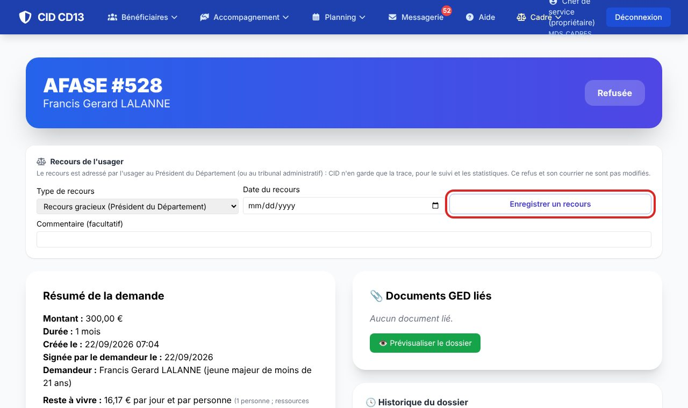
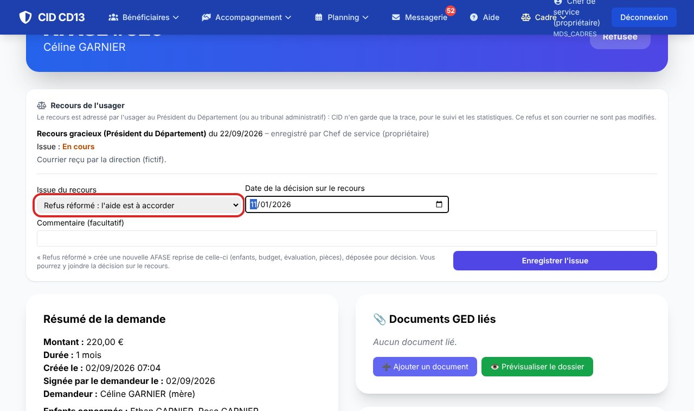
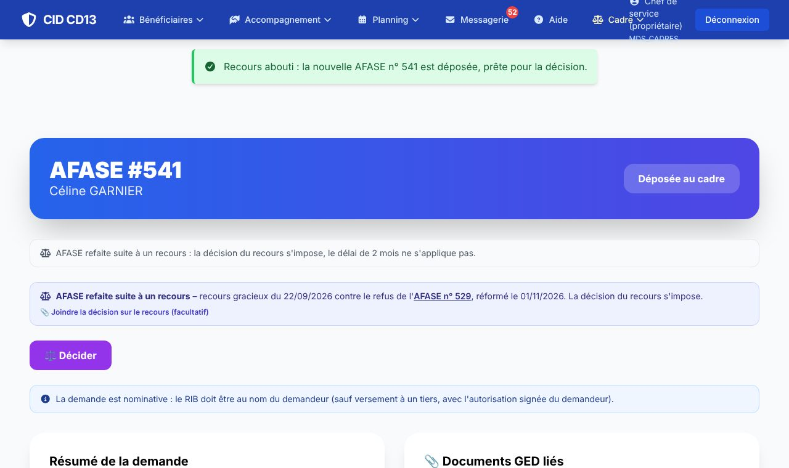
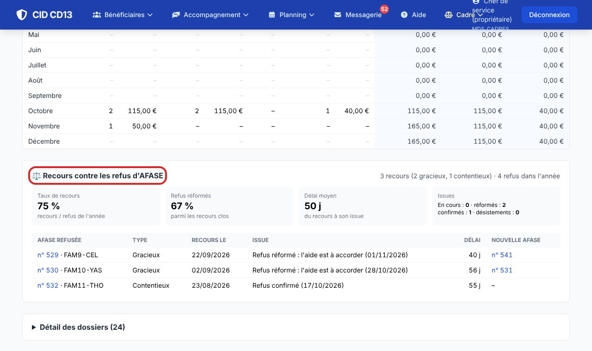

1Enregistrer le recours

- Ouvrez l'AFASE refusée : le cadre Recours de l'usager s'affiche.
- Choisissez le type (gracieux : Président du Département ; contentieux : tribunal administratif), la date du recours et, si besoin, un commentaire.
- Cliquez sur Enregistrer un recours : le recours est « en cours ».
2Enregistrer l'issue


- Quand la décision sur le recours est connue : choisissez l'issue (refus réformé, refus confirmé, désistement) et sa date, puis Enregistrer l'issue.
- Refus réformé : CID crée une nouvelle AFASE reprise de la demande refusée (enfants, budget, évaluation, pièces), déposée pour décision. Le premier refus et son courrier ne changent pas.
- Décidez la nouvelle AFASE comme d'habitude (Décider une AFASE) : le délai de 2 mois ne s'applique pas, et le courrier mentionne le recours.
- Vous pouvez joindre la décision sur le recours (pièce facultative) à la nouvelle AFASE, ou à l'AFASE refusée si le refus est confirmé.
3Suivre les recours

- La page des statistiques des aides présente les recours de l'année : nombre, gracieux ou contentieux, taux de recours, refus réformés, délai moyen et la liste des dossiers (aussi dans l'export Excel).
Bon à savoir
- Le recours se traite hors de CID : CID n'en garde que la trace, pour le suivi et la transparence en cas de contrôle.
Et ensuite ?
Cliquez sur une image pour l'agrandir. Le cadre rouge montre où cliquer ou quoi remplir. Toutes les données affichées sont fictives.